study with me with focus
javascript
introduction
JavaScript est un langage de programmation hautement dynamique, basé sur des prototypes et polyvalent, ce qui signifie qu'il offre une grande liberté aux développeurs pour créer des fonctionnalités interactives et des applications web sophistiquées. En plus d'être un pilier fondamental du développement web côté client, il est également utilisé pour le développement côté serveur grâce à des plateformes telles que Node.js.
Ce langage de script est principalement connu pour sa capacité à manipuler le contenu HTML, à styliser les éléments avec CSS et à ajouter des comportements dynamiques aux pages web. Grâce à des événements intégrés et à une manipulation DOM (Document Object Model) flexible, JavaScript permet de créer des interfaces utilisateur interactives, réactives et conviviales.
Il offre également la possibilité de réaliser des requêtes asynchrones vers des serveurs, permettant ainsi de charger des données en arrière-plan sans interrompre l'expérience utilisateur. Cette caractéristique est fondamentale pour les applications modernes qui nécessitent des mises à jour en temps réel et des échanges de données continus avec les serveurs.
L'écosystème JavaScript est enrichi par une vaste bibliothèque de frameworks et de bibliothèques. Par exemple, des frameworks comme React, Angular, Vue.js offrent des méthodologies de développement structurées pour construire des applications web complexes et réactives de manière efficace. Ces outils permettent aux développeurs de créer des interfaces utilisateur modulaires, des applications à page unique (SPA), et des applications à architecture robuste.
L'un des aspects les plus remarquables de JavaScript est sa flexibilité. Il peut être utilisé pour créer des jeux, des applications mobiles hybrides grâce à des outils comme React Native ou Ionic, des extensions de navigateur, des applications de bureau, et bien plus encore. En raison de cette polyvalence, de nombreux développeurs choisissent d'apprendre JavaScript en premier pour entamer leur parcours dans le développement web et logiciel.
Son évolution constante, avec l'ajout régulier de nouvelles fonctionnalités et améliorations, maintient JavaScript à la pointe de la technologie et en fait un élément clé pour l'avenir du développement web et logiciel.
generaliter sur js
1-message dans javascript
- document.write('message') : cette fonction est utiliser pour écrire un message simple
- alert('message'):affiche un boit dialogue d'alert avec un message
- confirm ('message'): affiche une boite dialogue de confirmation ave un bouton ok et annuler
- console.(log/warn/error) :affiche un message dans le console débogage du navigateur(.log our un message de journalisation/.warn pour avertissement/.error pour un message d'erreur)
- promt('message'):affiche un boit de dialogue qui demande a itilisateur d'enter du text
impact de javascript sur html et css
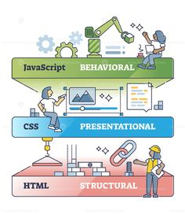
JavaScript a un impact significatif sur HTML et CSS en permettant une manipulation dynamique et interactive du contenu et du style des pages web.
1. Manipulation du DOM (Document Object Model) : JavaScript permet de manipuler le DOM, la structure de la page HTML, en ajoutant, supprimant ou modifiant des éléments HTML et leurs attributs. Cela signifie que des éléments peuvent être créés, modifiés ou déplacés en réponse à des actions utilisateur, offrant ainsi une expérience interactive et réactive.
2. Interaction utilisateur : Grâce à JavaScript, il est possible de rendre les pages web plus interactives en répondant aux actions de l'utilisateur. Des événements tels que les clics de souris, les survols, les saisies au clavier peuvent déclencher des actions, des animations ou des modifications de contenu en temps réel.
3. Validation de formulaire : JavaScript permet de valider les données des formulaires côté client avant leur soumission. Cela offre une meilleure expérience utilisateur en permettant de signaler instantanément des erreurs de saisie sans avoir à recharger la page.
4. Animation et dynamisme : JavaScript peut être utilisé pour créer des animations et des effets visuels sur les éléments HTML et CSS. Des transitions, des effets de défilement, des effets de fondu et d'autres animations peuvent être programmés pour améliorer l'aspect visuel et l'interactivité d'une page web.
5. Requêtes asynchrones : Avec l'utilisation d'AJAX (Asynchronous JavaScript and XML), JavaScript permet de réaliser des requêtes vers un serveur en arrière-plan, sans recharger la page. Cela permet d'actualiser dynamiquement les données d'une page sans perturber l'expérience utilisateur.
Quant à CSS, JavaScript peut également influencer son comportement :
1. Modification dynamique du style : JavaScript peut modifier les styles CSS en ajoutant, supprimant ou modifiant des classes et des propriétés CSS. Cela permet de changer dynamiquement l'apparence des éléments en fonction des interactions utilisateur ou d'autres événements.
2. Contrôle des animations : JavaScript peut être utilisé pour démarrer, arrêter ou modifier des animations CSS, offrant ainsi une plus grande flexibilité dans la gestion des effets visuels.
3. Adaptation du design : En utilisant JavaScript conjointement avec des médias queries, il est possible de créer des designs réactifs et adaptatifs qui répondent aux différents appareils et tailles d'écran.
En résumé, JavaScript agit en tant que langage de programmation qui interagit étroitement avec HTML et CSS pour offrir des expériences web interactives, réactives et dynamiques, en permettant la manipulation et le contrôle de la structure, du contenu et du style des pages web.
2-notion de variable/constans en js
déclaration var le nom du variable (exemple var a;)
l'affectationvar=un valeur(exemple var a = 10 ;)
affichagepour l'affichage en utilise un des fonction des message ci dessus (exemple document.write(a);)
-
type des variable :
- numbre (réel,entier)
- string (caractére,chaine de caractére)
- boolean (vrai,faut)
3-les opérateurs
Pour développer des programmes, en plus des variables à manipuler, nous disposons de nombreux opérateurs pour les traiter. JS utilise les opérations arithmétiques classiques. Dans les exemples, la valeur initiale de x sera toujours égale à 11.
| Signe | nom | Signification | Exemple | Résultat |
|---|---|---|---|---|
| + | plus | addition | x + 3 | 14 |
| - | moins | soustraction | x - 3 | 8 |
| * | multiplié par | multiplication | x*2 | 22 |
| / | divisé par | division | x/2 | 5.5 |
| % | modulo | rest de la division | x%7 | 4 |
| = | a la valeur | affectation | x=5 | 5 |
| Signe | nom | Exemple | Résultat |
|---|---|---|---|
| == | comparaison de valeurs | x==11 | true |
| === | comparaison de valeur et type | x==='11' | false |
| < | inférieur | x <11 | false |
| > | superieur | x>11 | false |
| != | différent | x != 11 | false |
Aussi appelés opérateurs booléens, ses opérateurs servent à composer deux ou plusieurs conditions.
&& et :(condition1) && (condition2) :est vrai si les 2 conditions sont vraies, sinon fausse
|| ou :(condition1) || (condition2) :est vrai si au moins une des 2 conditions est vraie, sinon fausse
!() non logique :!(condition) donne vrai si 'condition' est fausse, sinon fausse
4-les structures conditionnelles
structur if
{
code qui sera interpété si la condition1 est vraie
}
else if (condition2) //optionnel
{
code qui sera interpété si la condition2 est vraie
}
else //optionnel
{
code qui sera interpété si toutes les conditions ci-dessus sont fausses };
La condition doit être toujours entourée de parenthèses ( ). Les accolades { } ne sont obligatoires qu'en cas d'instructions multiples. Il est possible d'utiliser autant de blocs else if que nécessaire. La séquence else (optionnelle) est interprétée si toutes les 'condition' sont fausses
structur switch
{
case valeur1 : instructions à faire si variable=valeur1 ; break ;
case valeur2 : instructions à faire si variable=valeur2 ; break ;
...
default : instructions à faire, par défaut, si
variable est différente de valeur1, valeur2 etc ;
}
switch ne peut tester que l'égalité de valeurs et non pas l'inégalité. Le contenu des case ( valeur1, etc) doit être un élément déjà évalué. On ne peut y insérer des expressions. Pour éviter de tester tous les cas, l'utilisation de break permet de sortir du switch dès l'action terminée. Le default permet d'effectuer une action si la variable testée ne coïncide avec aucune des valeurs proposées dans les case précédent. Il faut préciser un break pour chaque case afin de sortir du switch, sinon le switch va lire et exécuter le code contenu dans chaque case à la suite.
4-les structures itératives
la boucle for
for (départ_compteur; condition_continuation; incrémentation)
{
code à interpréter ;
}
while
{
code à exécuter à chaque passage ;
}
do while
do
{
code qui sera interprété à chaque itération
}
while (condition);
La boucle do _ while est intéressante si besoin pour une raison ou pour une autre d'effectuer au moins un passage dans une boucle pour faire fonctionner un script. L'initialisation est exécutée avant tout passage dans la boucle for, tandis que l'incrémentation est exécutée à la fin de chaque passage dans la boucle for. JavaScript définit les mots-clé break et continue afin de modifier l'exécution des boucles. Le premier offre la possibilité d'arrêter l'itération d'une boucle et de sortir de son bloc d'exécution, et le second de forcer le passage à l'itération suivante. Les traitements suivants de l'itération courante ne sont alors pas effectués. break : permet d'interrompre prématurément une boucle for ou while. Continue : permet de sauter une instruction dans une boucle for ou while et de continuer ensuite le bouclage (sans sortir de celui-ci comme le fait break).
les fonctions
!vous pouvez essayer ces code pour mieux comprend
JavaScript offre de nombreuses fonctions intégrées pour effectuer diverses opérations. En voici quelques-unes parmi les plus couramment utilisées :
setTimeout() : Cette fonction permet de définir un délai (en millisecondes) après lequel une fonction spécifiée sera exécutée une seule fois.
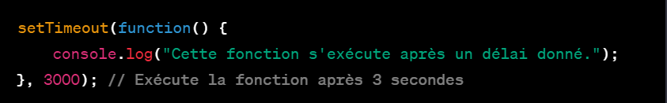
setInterval() : Similaire à setTimeout(), setInterval() exécute périodiquement une fonction donnée à intervalles réguliers spécifiés (en millisecondes).
clearTimeout() / clearInterval() : Permet d'annuler l'exécution d'une fonction définie avec setTimeout() ou setInterval() respectivement.
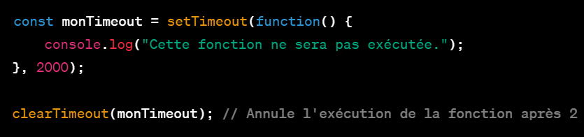
addEventListener() : Cette fonction est utilisée pour attacher un gestionnaire d'événements à un élément HTML, pour écouter des événements tels que les clics de souris, les changements de formulaire, etc.
fetch() : Cette fonction permet d'effectuer des requêtes HTTP asynchrones pour récupérer des ressources telles que des données JSON, des images, etc
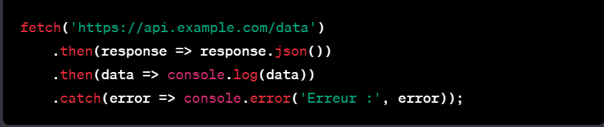
document.querySelector() / document.getElementById() : Ces fonctions permettent de sélectionner des éléments HTML pour les manipuler en JavaScript.
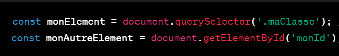
Array.map() : Cette fonction est utilisée pour créer un nouveau tableau en appliquant une fonction à chaque élément du tableau initial.

Array.filter() : Elle crée un nouveau tableau contenant uniquement les éléments du tableau initial qui satisfont à une condition spécifiée.
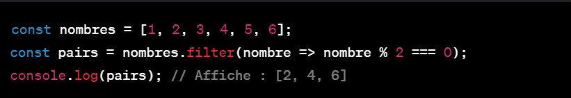
Array.reduce() : Permet de réduire un tableau à une seule valeur en appliquant une fonction accumulateur à chaque élément.
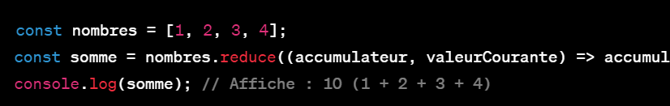
Object.keys() / Object.values() / Object.entries() : Ces méthodes sont utilisées pour travailler avec les propriétés des objets en JavaScript.
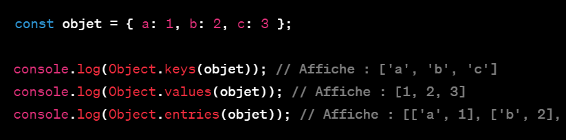
Math.random() : Génère un nombre aléatoire entre 0 (inclus) et 1 (exclus).
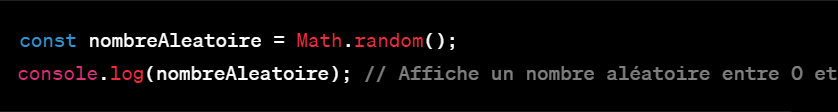
Promise : Une construction asynchrone utilisée pour gérer les opérations asynchrones et les rappels (callbacks). Elle représente une valeur qui peut être disponible maintenant, dans le futur, ou jamais.
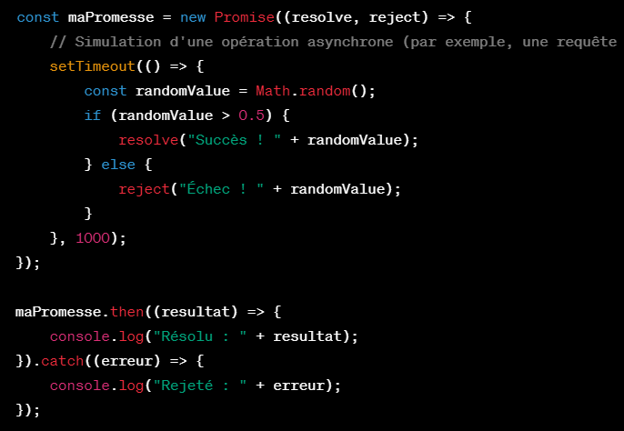
async/await : Une syntaxe utilisée avec les Promises pour écrire du code asynchrone de manière plus synchrone et lisible.
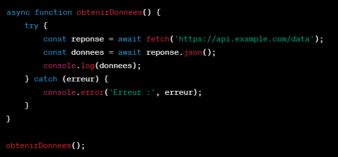
forEach() : Méthode permettant d'itérer sur chaque élément d'un tableau et d'appliquer une fonction sur chaque élément.
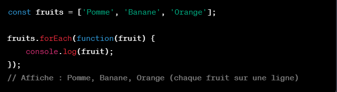
Object.assign() : Permet de copier les valeurs de toutes les propriétés propres énumérables d'un ou plusieurs objets source vers une objet cible.
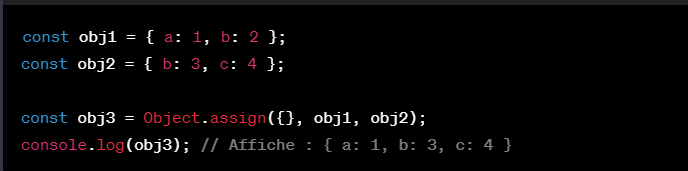
localStorage / sessionStorage : Ces API permettent de stocker des données dans le navigateur côté client. localStorage conserve les données indéfiniment, tandis que sessionStorage les conserve uniquement pour la durée de la session.
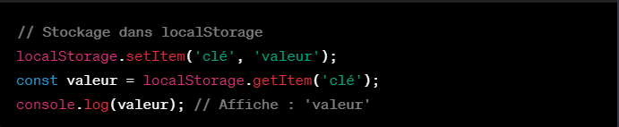
Date() : Permet de travailler avec les dates et les heures en JavaScript.
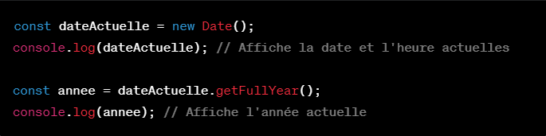
Math methods : L'objet Math offre de nombreuses méthodes pour effectuer des opérations mathématiques complexes.
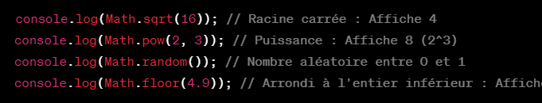
Set et Map : Les objets Set et Map sont des structures de données pour stocker des collections d'éléments uniques (Set) ou des paires clé-valeur (Map).
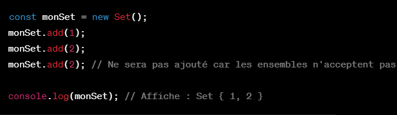
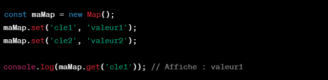
les événements
En Java, la gestion des événements se fait généralement à l'aide de classes et d'interfaces fournies par la plateforme Java, notamment dans les interfaces graphiques utilisant Swing ou JavaFX. Voici un exemple simple de gestion d'événements en Java Swing pour un bouton (pour telecharger le documents des evenement )